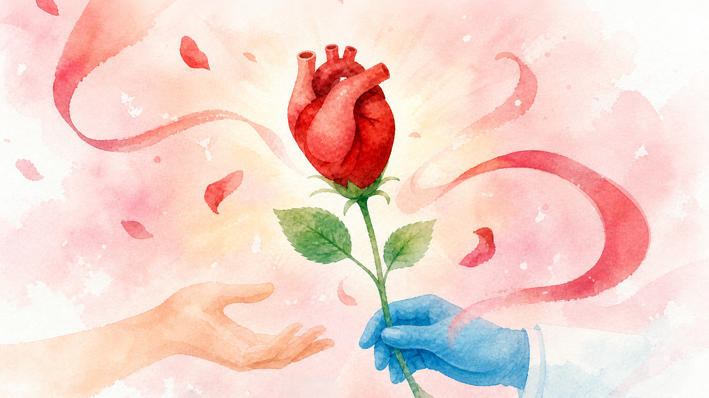
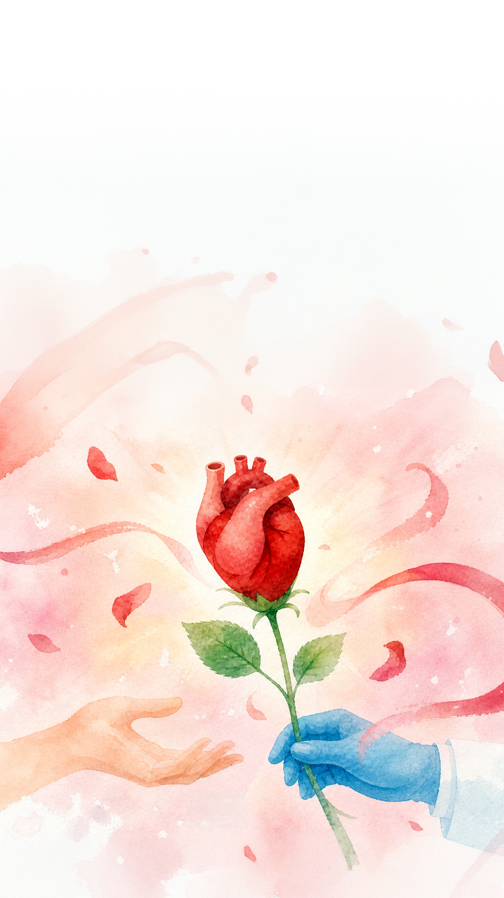

位在永康街的搖滾牛冰淇淋，曾在2025年獲選為國宴冰淇淋，是不少冰淇淋愛好者心中的口袋名單。
這家冰淇淋店老闆楊鈞儀是一名腎臟移植者，29歲接受移植至今已10多年，不但迎來新人生，也擁有自己的事業。
但並非每個人都像楊鈞儀一樣幸運，還有許多等待器官的病患始終等不到那通改變命運的電話，甚至甘冒風險遠赴他國移植。
為什麼台灣器官器捐成案這麼難？捐贈制度究竟出了什麼問題？每一次成功的器捐，背後是文化、制度、人力、資源等層層綿密交織的成果，《康健》從真實案例故事、到第一線觀察與分析，揭開國內大愛器捐的困境，讓每一份重生大禮，送到對的人手上。
首起醫師因涉嫌仲介病患赴中國接受器官移植而遭廢止醫師證書的陳堯俐案，再度讓「器官移植旅遊」浮上檯面。但當社會聚焦法律、道德與器官來源爭議時，更根本的問題是：病人為何願意花費數百萬元，冒著生命危險遠赴海外移植？這背後也正凸顯出台灣器官「供給不足」的問題。
台灣每年約有3萬～4萬人註記器捐意願，實際完成捐贈的人數卻在疫情後持續下降，2025年接受移植的人數更是10年來新低。從醫院通報、器官評估、協調團隊介入到家屬同意，究竟是哪個環節，讓原本可能實現的善意中斷？
資料來源：預立醫療決定、安寧緩和醫療及器官捐贈意願資料處理小組
整理：楊雅棠
註：器捐意願不等於日後能實際捐贈，仍須符合死亡情境、醫療條件及器官適用性等條件
資料來源：預立醫療決定、安寧緩和醫療及器官捐贈意願資料處理小組
整理：楊雅棠
註：一位捐贈人可捐贈不只一項器官，故移植人數較捐贈人數為多
資料來源：預立醫療決定、安寧緩和醫療及器官捐贈意願資料處理小組
整理：楊雅棠
截至2025年底，全台等待器官移植人數超過1.1萬人。從2023～2024年的數據更可以看到，每年有1000多人因為等不到器官而離開。
資料來源：器官捐贈移植登錄及病人自主推廣中心
整理：楊雅棠
| 排序 | 區域 | 國家/地區 | 數值 (每百萬人口) |
|---|---|---|---|
| 1 | 歐洲 | 西班牙 | 47.96 |
| 2 | 北美洲 | 美國 | 43.62 |
| 22 | 大洋洲 | 澳洲 | 18.43 |
| 30 | 大洋洲 | 紐西蘭 | 12.83 |
| 41 | 東亞 | 南韓 | 7.68 |
| 45 | 東南亞 | 泰國 | 5.79 |
| 46 | 西太平洋 |
台灣
+
每百萬人口5.77名器捐者，僅西班牙約1/8，也落後澳洲、紐西蘭、南韓
|
5.77 |
| 48 | 西太平洋 | 新加坡 | 4.75 |
| 49 | 東亞 | 中國 | 4.65 |
| 66 | 東亞 | 日本 | 1.13 |
註：僅列出全球前兩名及西太平洋與東南亞部分國家
資料來源：全球器官捐贈與移植觀察站（GODT）、器官捐贈移植登錄及病人自主推廣中心整理
當病人終於等到救命器官，對移植團隊而言，真正的挑戰才剛開始。從半夜奔波取器官、數小時的高風險手術，到術後長達數十年的追蹤照護，移植醫療是一場沒有終點的馬拉松。
然而，移植醫學學會今年僅招募到3名新會員，創近10年新低；部分醫院則面臨新血不進、中生代流失、資深醫師苦撐的接班斷層。當救命技術後繼無人，器官移植還能只靠醫師的熱忱與犧牲支撐嗎？
器官捐贈能否順利完成，器捐協調師是不可或缺的關鍵。從陪伴家屬、安排腦死判定、協調醫療團隊，到器官評估、配對與摘取作業，甚至最後的感恩致謝，都由協調師串聯完成。
這份工作不只需要高度專業，一次值班更長達7天，一通電話就得立即出勤。然而，全台器捐協調師已從137人減至129人，多家移植中心長期招募仍補不到人。當器捐成案的關鍵人力持續流失，制度該如何補上缺口？
近7成民眾表達器官捐贈意願，但臨床上真正面臨至親離世時，同意捐贈的家屬約僅2～3成。躺在病床上的是相伴數十年的家人，家屬不只捨不得對方「再痛一次」，更可能擔心簽下同意書，就等於親手選擇放棄。
從20歲驟逝的男大生，到97歲溫柔告別的黃奶奶，兩個家庭的故事顯示，生前談論器捐意願，能減輕家屬在最後關頭代替摯愛決定的壓力。器捐不只可能延續他人的生命，也可能幫助留下來的人安放悲傷；但無論捐或不捐，決定的起點都是對家人的愛。